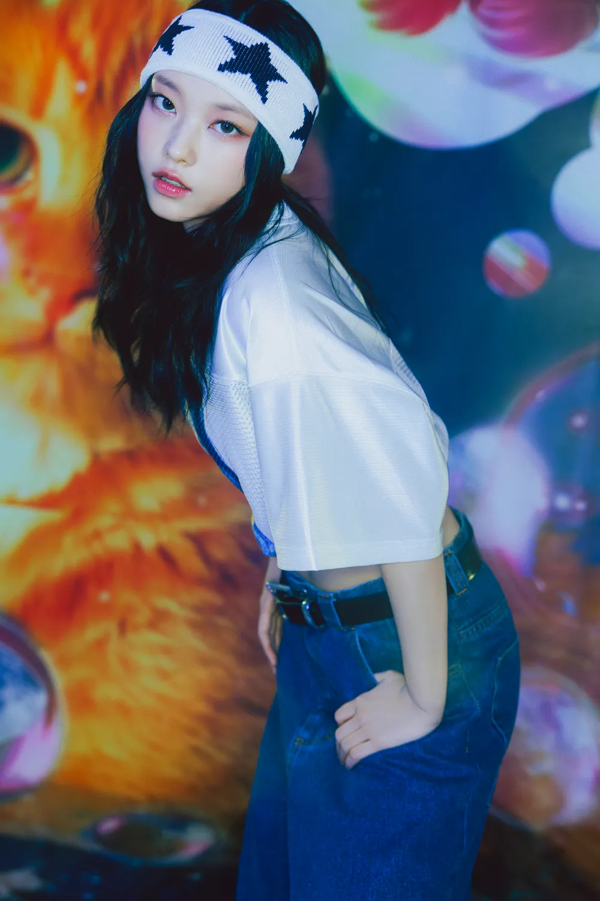

- MINJI
- HANNI
- DANIELLE
- HAERIN
- HYEIN
HAERIN
대한민국의 가수이자 ADOR 소속 5인조 다국적 걸그룹 NewJeans의 멤버.

보컬
- 처연하고 애틋한 감성이 도드라지는 특유의 가녀린 옥구슬 같은 음색이 매력적이다.
약간 허스키하고 보이시한 음색도 선보일 때가 있는데, 이런 정반대의 음색들도 매력적으로 소화한다.
- 댄스곡에서는 다소 시크하면서도 환기력이 강한 음색을 보여준다.
'Hype Boy'에서 후렴 파트를 맡아 강한 환기력을 잘 살렸으며, 'OMG'에서는 시크한 음색을 극대화하여 킬링파트를 만들어내고 있다
- 데뷔 앨범의 트리플 타이틀에서 모두 후렴파트를 맡았다.
댄스
- NewJeans는 공식적으로 포지션이 없지만 팬과 대중들 사이에서 하니와 함께 댄스로 언급이 많은 편이다.
현란한 동작이 많은 하니와의 듀엣 무대들도 반응이 무척 좋았다.
탄탄한 기본기를 토대로 세련되면서도 리드미컬하게 춘다.
힙합을 즐겨 듣는데 춤 또한 힙합 기반의 춤을 특히 잘 살려 멤버들에게서도 평가가 높다.
- 무게 중심이 낮게 잘 잡혀 있고 좋은 풋워크를 바탕으로 한 정확하고 밸런스가 뛰어난 춤선을 가지고 있다.
- 보컬과 마찬가지로 댄스에서도 데뷔 앨범의 트리플 타이틀에서 킬링파트를 많이 맡았다.